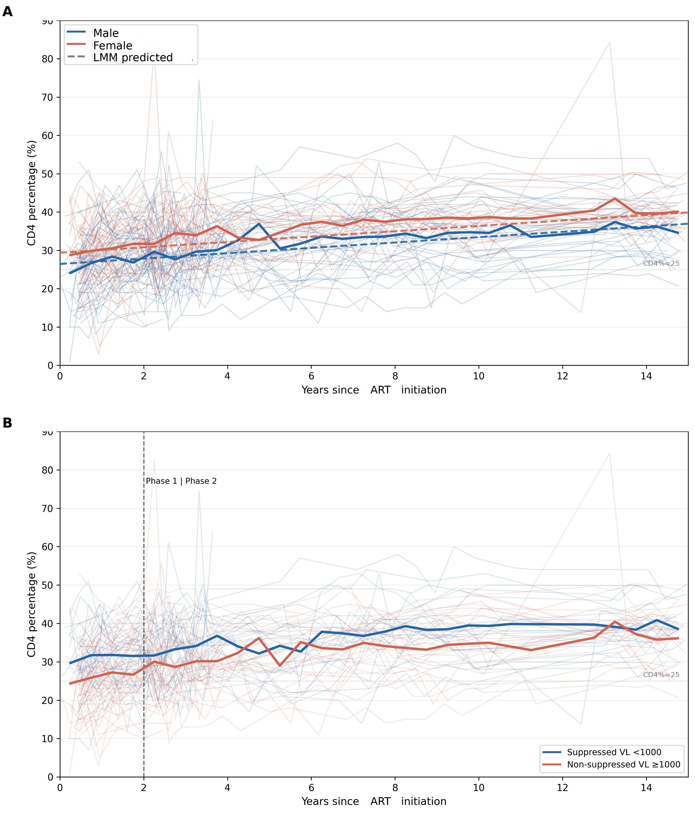

Biostatistician and lecturer with a strong foundation in statistical inference, working on longitudinal and Bayesian modeling, clinical trials, and spatial epidemiology for HIV, TB and other public health applications.
About Me
I am a lecturer in the Department of Mathematics at the University of Nairobi and a Master's student in Biostatistics (Capstone program) at the University of Washington. I am trained in statistical inference and advanced biostatistical methods, with a strong emphasis on selecting appropriate models based on the research question and target parameter.
Besides teaching statistics and biostatistics, I apply rigorous statistical thinking to real-world health data. This includes longitudinal analysis of a pediatric HIV cohort in Nairobi (mixed effects models, GEE and survival methods), clinical trial analysis, spatial disease mapping, Small Area Estimation (SAE) and survey sampling. I am a PhD Applicant at the University of Nairobi, researching Systematic, Age- and Strain-Stratified Identification of Pro- and Anti-HIV Host Factor Genes in CD4+ T Cells of HIV-Infected and Uninfected Children and Adults in Kenya: A Transcriptomic and Bayesian Hierarchical Modeling Framework.
I am broadly interested in biostatistics, data science, statistical inference, Bayesian methods, and genomics/transcriptomics, with a focus on applying advanced statistical methods to public health data and disease surveillance.
For more information about me, please check out my Resume, or reach out via email or LinkedIn.
kevsim98@uw.edu
kevinmukubwa61@gmail.com
Lecturer, Department of Mathematics
University of Nairobi
PhD Applicant
University of Nairobi, Nairobi, Kenya
MS Biostatistics (Capstone) Student
School of Public Health
University of Washington
Experience
Volunteer Biostatistician, Fred Hutchinson Cancer Center, Seattle, WA (Jun 2026 – Sep 2026)- Supported the statistical analysis of a multi-site, randomized Phase IIC trial of adjunctive atorvastatin added to standard anti-tuberculosis therapy in drug-susceptible pulmonary TB.
- Teach statistics and applied mathematics courses to students across ten faculties, and mentor students through office hours and academic advising.
Skills
- Study Design:
- Clinical trial design and analysis
- Sample size and power calculations
- Cross-sectional, cohort and case-control studies
- Statistical Methods:
- Linear mixed effects models
- Generalized Estimating Equations (GEE)
- Survival analysis: Cox regression, Restricted Mean Survival Time (RMST), competing risks
- Bayesian modeling: Markov Chain Monte Carlo (MCMC), Hamiltonian Monte Carlo / No-U-Turn Sampler (HMC/NUTS), Bayesian joint modeling, Bayesian Kernel Machine Regression (BKMR)
- Small Area Estimation (SAE)
- Tools:
- R, Python, SQL, Excel, Tableau, GitHub
- Integrated Nested Laplace Approximation (INLA)
- Stan/CmdStan
- LaTeX/Beamer
- Transcriptomics:
- Single-cell RNA sequencing (scRNA-seq) analysis: Seurat, DESeq2/edgeR, Slingshot, Gene Set Enrichment Analysis (GSEA)
- PBMC single-cell workflow: quality control, normalization, dimensionality reduction (Principal Component Analysis (PCA), Uniform Manifold Approximation and Projection (UMAP)), clustering, and cell type annotation
- Dataset integration and batch correction: Canonical Correlation Analysis (CCA), Reciprocal PCA (RPCA), Harmony, Fast Mutual Nearest Neighbors (FastMNN)
- Pseudobulk differential expression (DESeq2)
- Analysis of Omic Data (general):
- Quality control and filtering of high-dimensional omic data
- Normalization and variable feature selection
- Dimensionality reduction and clustering
- Differential expression testing (per-cell and pseudobulk)
- Reference-based annotation
Projects
Long-Term CD4 Recovery Patterns and Cofactors in Children with Perinatally Acquired HIV (manuscript in preparation)Secondary analysis of the Optimizing Pediatric ART (OPH) study. Infants with perinatal HIV <13 months of age were enrolled between 2007–2010 in Nairobi, Kenya. Data from children with perinatally acquired HIV (CPHIV) with at least 2 CD4% measurements and up to 15 years of post-ART follow-up were used to longitudinally model CD4 trajectories using linear mixed effects models. A separate piecewise mixed model (Phase 1: 0–2 years; Phase 2: 2–15 years) tested whether viral suppression (viral load <1000 copies/mL) at year 1 post-ART predicted long-term CD4% trajectory.
Among 104 CPHIV (median age at enrollment 4.4 months, IQR 3.6–10.0; median age at ART start 4.9 months, IQR 4.1–7.8), CD4% recovery followed a biphasic pattern: a rapid rise in the first 2 years of ART (+2.11 points/year, 95% CI 1.19–3.03), followed by a slower, sustained rise thereafter (+0.62 points/year, 95% CI 0.52–0.71). Higher baseline CD4% was the strongest predictor of long-term CD4% (β=13.54, 95% CI 7.70–19.38, p<0.001). Males had lower CD4% than females throughout follow-up (β=−2.58, 95% CI −4.62 to −0.54, p=0.014), and viral load increases were temporally associated with CD4% decline (β=−2.07, 95% CI −2.37 to −1.78, p<0.001). First-line ART regimen and baseline weight-for-age were not significant predictors. Children who achieved viral suppression by 12 months post-ART (early-suppressed) had a persistent CD4% advantage of 5.26 points (95% CI 2.36–8.16, p<0.001) throughout follow-up, with no difference in the rate of CD4% recovery between early-suppressed and early-unsuppressed children. Early-suppressed CPHIV reached immune reconstitution (CD4% >25%) earlier than early-unsuppressed children (median 5.5 vs 23.3 months after 1 year post-ART, log-rank p=0.0249).
Key Methods: Linear mixed effects models, piecewise (segmented) mixed models, Kaplan–Meier and log-rank tests

Worked through a complete Seurat v5 scRNA-seq pipeline on public PBMC datasets: quality control and filtering, normalization (log-normalization and SCTransform), dimensionality reduction (PCA, UMAP), clustering, and marker-based cell type annotation. Extended this to integrating a stimulated-vs-control (interferon-beta) dataset across four batch-correction methods (CCA, RPCA, Harmony, FastMNN), Azimuth reference-based annotation on a nine-batch, multi-technology dataset, and both per-cell and true pseudobulk (DESeq2, donor-level replicates) differential expression testing.
Key Methods: Seurat v5, quality control and normalization (SCTransform), PCA/UMAP, Louvain clustering, dataset integration (CCA, RPCA, Harmony, FastMNN), Azimuth, DESeq2 pseudobulk differential expression
Longitudinal Lipid Trajectories in Kenyan Children with Perinatally Acquired HIV (manuscript in preparation)Secondary analysis of the OPH cohort characterizing lipid trajectories from infancy through age 10 and evaluating early-life correlates of dyslipidemia across childhood.
Key Methods: Modified Poisson regression with robust standard errors, Generalized Estimating Equations (GEE)
ATORTUB: Atorvastatin as Adjunct Therapy for Pulmonary TuberculosisVolunteer biostatistician on the analysis of a multi-site, randomized, open-label Phase IIC trial evaluating three doses of adjunctive atorvastatin, examining microbiological, radiological and lung function outcomes.
Key Methods: Clinical trial analysis, time-to-event and categorical outcome analysis, R
Systematic, Age- and Strain-Stratified Identification of Pro- and Anti-HIV Host Factor Genes in CD4+ T Cells of HIV-Infected and Uninfected Children and Adults in Kenya: A Transcriptomic and Bayesian Hierarchical Modeling Framework (PhD research proposal, University of Nairobi)Identifying pro- and anti-HIV host factor genes in CD4+ T cells, stratified by age and viral strain, comparing HIV-infected and uninfected children and adults in Kenya using transcriptomics and Bayesian hierarchical modeling.
Determinants of Contraceptive Method Choices Among Married Muslim Women in Indonesia- Conducted a cross-sectional study analyzing data from the Demographic and Health Survey (DHS) to examine socio-demographic determinants influencing contraceptive choices
- Used multinomial logistic regression; results published in the Bulletin of Mathematics and Statistics Research (2024)
Conducted a comparative analysis of small area estimation models, including spatial Fay-Herriot, unstratified cluster level, stratified cluster level and Bayesian approaches to estimate antenatal care (ANC 4+) coverage across subnational regions in Kenya.
The analysis focused on improving precision of estimates in areas with limited survey data, incorporating spatial structure to capture geographic variation and identify disparities in coverage
Key Methods: Small Area Estimation, Spatial modelling, Bayesian inference (INLA)

Disease mapping for lung cancer mortality data for men in Valencia region of Spain from 1991-2000
The main focus was risk estimation. Standardized Mortality Ratios(SMR) compare observed deaths to expected deaths in each area. Relative Risk(RR) mapping using bayesian spatial models( Besag-York-Mollie) to estimate smoothed RR to account for small population areas where raw rates fluctuate wildly.
Uncertainty mapping; Posterior SD for the mean RR and SE for the SMR to assess confidence in the RR and SMR estimates. Helps distinguish real hotspots from random fluctuations
Key Methods: Disease Mapping, Relative Risk and SMR, Bayesian spatial modelling, Spatial data visualization


Publications
Simiyu K, Muhua G. Multinomial Logistic Regression to Study the Determinants of Choices of Contraceptive Methods among Married Muslim Women in Indonesia. Bulletin of Mathematics and Statistics Research (BOMSR), Volume 12, Issue 2, 2024. bomsr.com